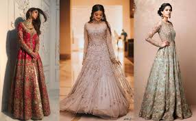
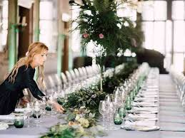
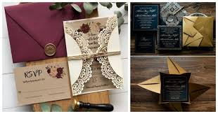

Why choose us?
wedme_good provides one of the best services according to XYZ magazine. We have over 100+ branches providing their sevice throughout India. Our skilled team of about a hundred people make sure to make your special day memorable . Whether it is the invitation distribution or the lodging of your guests our team manages eveything to make you and your family comfortable.We specializes in managing just these occasions; from small, intimate family events to large, spectacular celebrations: weddings are the only thing we do! We can plan your entire wedding from venue bookings, vendor management to the overall design and execution. We offer a personal service, accompanying you not only on your initial viewing of possible venues but on any subsequent visits and for the duration of your wedding, ensuring total dedication to you.
Destination wedding planning is our strongest competence . So if you are planning for a destination wedding , do let us enhance your experience by our flawless execution.
We offer a wide range of services ranging from full service design and execution to wedding day coordination.Every detail of your wedding will be managed meticulously by our contacts , resources and our managing team. We will make sure your wedding has a "WOW-FACTOR".
>Bridal Wear
Dress to express! Yes, we have a wide collection of outfits you can chose from . Our designers also customise outfits according to your choice and theme. So look your best on your great day with our amazing collection.
Catering services
It takes a lot of preparation and planning to run successful event or party. With the help of a professional catering service, you can relax, enjoy the event and spend time with your guests. Good food makes everything better. We provide professional experienced chefs and promise you profound dinning. 
Grand Invitation
When it comes to wedding cards you have to put some thought , not only will it crete a first impression but also give a sneak-peek into the wedding . Make sure the cards incorporate your wedding theme and decors , the best way is to get it personalised by our desiners.
